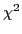

Tikhonov regularization is commonly used to solve nonlinear ill-posed inverse problems. The convergence of these methods is verified as the noise in the data goes to zero. However, in most applications the data noise does not go zero, and regularization parameters based on noise estimates are found. For example, the discrepancy principle can be viewed as applying a

test to the data residual in order to determine the regularization parameter. However, when the number of parameters is greater than or equal to the number of data it is not possible to apply the test because the degrees of freedom is negative or zero. We suggest applying the test to the regularized residual because the degrees of freedom is equal to the number of data, and we call this approach the method.In this talk we describe how the method can be applied to nonlinear problems. We will show both analytically and numerically that each iterate of of the Gauss-Newton and Levenburg-Marquart methods follow a distribution. This property can be used to find regularization parameters as is done with the discrepancy principle in Occam's method. However, our approach differs in that we used the regularized residual rather than the data residual, and can estimate a different regularization parameter at each iterate.